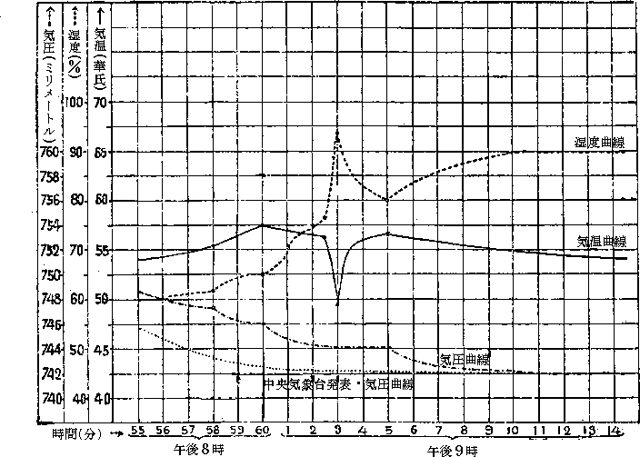

| 赤耀館事件の真相 | |
| 海野 十三 | |
| (2012) | |
赤耀館事件の真相
海野十三
「赤耀館
事件」と言えば、昨年起った泰山鳴動して鼠一匹といった風の、一見詰らない事件であった。赤耀館に関係ある人々の急死が何か犯罪の糸にあやつられているのではないかと言うので、其筋では二重にも三重にも事件の調査を行ったのであったが、いわゆる証拠不充分の理由をもって、事件は抛棄
せられたのであった。東京の諸新聞は、赤耀館事件の第一報道に大きな活字を費したことを後悔しているようだったし、中でも某紙の如きは、近来警視庁が強い神経衰弱症にかかっている点を指摘し、この調子では今に警視庁は都下に起る毎日百人宛
の死者の枕頭
に立って殺人審問をしなければ居られなくなるだろうなどと毒舌
を奮
い、一杯担
がれた腹癒
せをした。
しかし探偵小説に趣味を持っている私としては、諸新聞の記事を聚
め、又警視庁の調書も読ませて貰い、なるほど証拠不充分、乃至
は証拠絶無の事実を合点することが出来たのであったが、どうしたものか、事件の底に猶
消化しきれない或るものが沈澱
しているような気がしてならなかった。このことは、その後、機会があるごとに、自分の左右に席を占める人達に話をしてみたが、誰も私ほどの興味を覚えている人はなかったようである。
ところが昨日になって、私は突然、赤耀館主人と名乗る人からの招待状を受取った。その文面はすこぶる鄭重
を極めたもので、「遠路
乍
ら御足労を願い、赤耀館事件の真相
につき御聴取を煩
わしたく云々」とあった。赤耀館事件の真相と呼び、圏点
まで打ってあるところを見ると、矢張り私の想像したとおりに、今日まで発表された事件の内容以外に、隠されている奇怪な事実があるのに違いない。私は勿論、喜んで拝聴に出かける旨
を返事した。
赤耀館は東京の近郊Ｎ村の、鯨ヶ丘と呼ばれる丘の上に立っている古風な赤煉瓦の洋館である。私もはじめて赤耀館を車窓から仰いだのであるが、正直なはなし、余りいい感じがしなかった。あの事件の当時の新聞記事によると「赤耀館は、鯨の背にとびついた赤鬼の生首
そのものだ」とか「秋の赤い夕陽が沈むころ、赤耀館の壁体は血を吸いこんだ壁蝨
のように真中から膨
れて来る」とか言われている。秋十月の落日は、殊に赤
のスペクトルに富んでいるせいもあろうが、西に向いた赤耀館の半面を、赤煉瓦の色とは見うけ兼ねる赤さに染めあげていた。その毒々しい赤さは、唯、不思議な気味のわるい赤さというより外に説明のみちがないのである。
赤耀館の主人、松木亮二郎
は、思いの外、上品な、そして柔和な三十過ぎの青年紳士に見えた。しきりに、漆黒の髪が額に垂れ下るのを、細い手でかき上げるのが、なんとはなしに美しかった。私が夢から醒
めきらぬような顔付をしているとて、にやにや笑ったが、愛想
よく食後の葉巻煙草などをすすめて呉れた。高い天井には古風なシャンデリアが点いていたが窓外にはまだ黄昏
の微光が漾
っているせいか、なんとなく弱々しい暗さを持った大広間だった。段々と気持も落付き、この上強いて気になることを神経質に数えあげるならば、主人公の顔貌
が能面でもあるかのように上品すぎることと、その胆汁
が滲
みだしたような黄色い皮膚と、そして三十女の婦人病を思わせるような眼隈
の黝
ずみぐらいなものであった。しかし軈
てそれさえすこしも気にならなくなった。というのは、主人公の語り出した所謂
「赤耀館事件の真相」なるものが私の想像以上に複雑とも奇々怪々ともいうべきものであって、飢え渇いていた私の猟奇
趣味は、時の経つのも忘れてその物語を聞き貪
ったことである。
さて、赤耀館主人は語る――。
赤耀館の顚末
は、新聞記事で、既によくご存知のことと思います。いや、貴方はあの事件について、最も興味と疑惑とを持っていらっしゃることも、実はちゃんと前から知っていたのです。貴方は警視庁の調書まで読まれたそうですが、薩張
り満足せられていないように見受けたと、尾形警部が言っていましたよ。尾形警部と言えば、赤耀館事件の取調主任であった人です。
貴方の異常な熱心さと、私の傾きかけた健康状態とが、とうとう今夕の機会を作りあげて呉れました。もはや御察しのとおり、あの赤耀館事件には、発表されていない怪事実が二重にも三重にもひそんでいるのでして、それを本当に知っているのは、私一人に違いないのです。実を言えば、私自身すら、まだはっきりと知ることの出来ない事件の一部分があるのではないかと思うのですが、それは多分、此の種の魅惑
に満ちた事件が発散する香気のようなものに過ぎないのでしょう。兎
も角
も、赤耀館事件につき最も多くの事実を知っている者は、私を除いて外に絶対にあり得ないのですから......。
この赤耀館という洋館は、誰が建てたものであるか、年代はいつ頃だったのか、それは不思議にも薩張り判っていません。しかし何でも大変古い赤煉瓦を使った洋館であることと、設計者が仏蘭西
人らしいということは噂になっています。出来たのは多分明治の初年か、またはもう二三年も前だろうと思われますが、そのころこの周辺は今よりも更に更に草深いところであって、其の当時、どうして人間が住むことが出来たろうかと、寧
ろ不思議にたえません。その赤耀館を私の祖父に当る松木龍之進が大警視時代にどうしたものか手に入れてしまったのです。それは今から五十年も前のことなのです。勿論、自分のものにはしたものの、この中に住もうなどとは思っていませんでした。私の父の龍太の時代になって、東京が郊外に膨脹をはじめ、電車もひけるようになってから、初めて松木家の全家族がここに移り住むことになったのです。
しかしそれからというものは松木家には不思議な魔の手が伸びたらしく、母が死ぬ、父が続いて亡くなる、妹が死ぬといった風でした。父は一人児だったし、母の里にも誰も生きのこっては居なかったので、私達の一家は全く心細い限りでした。不思議なことに、先代の赤耀館主人であった私の亡兄丈太郎の妻、つまり私にとっては嫂
にあたる綾子
も、係累
の少い一人娘だったのです。嫂には姪
に当る梅田百合子というのが唯一の親族でした。この百合子は、実は私の妻になっているのです。
父母と妹とが亡くなってから此方十年あまりと言うものは、私達一家は割合に呑気に、そして幸福に暮していました。兄が前に申した綾子と結婚すると、私は間もなく独逸
へ遊学にでかけました。兄はたった一人の同胞に別れるのが大変に辛いと申しました。しかし兄は、長い間のはげしい恋をしてやっと獲ることの出来たいわば恋女房と、これからは差向
いで暮すわけなのですから私は唯もう兄の弱気を嗤
って独逸へ出発いたしました。それは今から三年前の冬のことなのです。私はカールスルーエの高等工学院に旅装をとき機械工学の研究のため学校の中に起居していました。そこでは人に応接する面倒もなく、穴蔵の中で自由な研究時間を持つことが出来ました。故国からは、たまに兄や嫂からの手紙を受けとりましたが、文面の隅から隅まで、まるで薔薇
の花片を撒
きちらしたように、桃色の幸福に充ちて居り、不吉な泪
のあとなどはどんなに透
かしてみても発見することができなかったのでした。赤耀館の悪魔は、もう十年この方、姿を現わさない。悪魔は我が家の棟
から永遠に北を指して去ったものとばかり思って、すっかり安心をしていました。
それだのに、一昨年の春になって、悪魔は突然、我が家のうちに再び姿を現わしました。悪いことには、悪魔は十年の間、血に飢えていたせいか、その呪
いの被害もこれまでに見られないほど残虐を極めたものでした。いわゆる「赤耀館事件」なる有難くない醜名を世間に曝
すことになったのです。そして一昨年の春、くわしく言えば六月十日に、折柄来訪して来た笛吹川画伯の頓死
事件を開幕劇として怪奇劇は今尚、この館に上演中なのです。
笛吹川画伯は、その日、午後三時をすこし廻ったと思う頃、赤耀館の玄関にひょっくりその姿を現わしました。執事
の勝見伍策というのが出迎えましたが、直ちに私の兄で、赤耀館の当主であった丈太郎に取次ぎましたが、兄は舌打
ちをして顔の色さえ変えました。勝見に会見の諾否を伝えようと思っている間に、入口の扉を乱暴に開くと、笛吹川画伯がぬからぬ顔を真正面に向けて入って来ました。
「無断で入って来ちゃ困るじゃないか」と兄は唇をワナワナふるわせて呶鳴
りました。
「馬鹿を言え、貴様から礼儀だの修身だのというものを聞こうとは思わんよ」と大口を開いて高らかに笑い、無遠慮に側
らの安楽椅子を引きよせました。勝見は顔を曇らせて此の室を去りました。
それから時々激しい声音が、厚い扉
をとおして廊下にまで、きこえたそうです。笛吹川画伯は兄と以前はほんとに仲のよい親友だったのです。識
り合ったのは、そんなに古くからではなかったようですが、どこか大変性分の合うところでも発見したものか、二人は兄弟以上の親しさを加えました。それが嫂――当時の綾子嬢が二人の間に挟
まると、今度は恐ろしいほどの敵同志になってしまったのです。その激しい愛慾の闘争は、かれこれ半年もうちつづいたようでした。どうした風の吹きまわしか、綾子嬢は兄の腕にしっかり抱かれてしまいました。失恋した笛吹川画伯の様子は珍無類でした。彼は泪を滾
したり、無口の人となる代りに、大層快活になり、能弁家になりました。一間に閉じこもって破れて落ちる文殻
を綴り合わせているどころの話ではなく、彼は毎日のように顎髯
をしごき乍ら、赤耀館へ憎々しい姿を現わしました。彼は兄の前で、皮肉と呪いの言葉を無遠慮に吹きかけては喜んでいるらしい様子でした。兄には彼が、この上もなく恐ろしい人間に見えました。あれ以来というものは、快活を装う半面に於て、不思議な魅力を加えた彼の眼光と、切々と迫る物狂わしい彼の言葉とは、地獄を故郷に持っているらしい画伯の正体を見せつけられたような気がするのでした。そうかと言って、兄はほんの少しだって、彼の失恋に同情心なんか起し得なかったのです。それは兄の無情のためというよりも、笛吹川画伯の態度があまりに同情を受けない程度の憎々しさに満ちていたがためでしょう。
赤耀館の大時計がにぶい音響をたてて、四時を報ずると、兄の居間にあたって突然奇妙な声がきこえ、それに続いて瀬戸物
のこわれるような鋭い音がしました。そして五分も経ったと思われるころ、執事を呼ぶベルの音が階下に鳴りひびいたのでした。
執事の勝見は私室から飛び出すと、階上の兄の室を指して、駆け出しました。何故彼がもっと前に、二階へ駆け上っていなかったのか、一寸不思議でなりません。
勝見が兄の部屋の扉
を開くと、直ぐ足許に、笛吹川画伯が仆
れているではありませんか。兄は椅子の中にうずくまった儘
、顔には血の気もありません。
「い......医者を呼びましょうか」と勝見は兄の救いを求めるかのように、叫びました。
「待て......」と言って兄がふりあげた右手に、細身の短刀がキラリと光ったものですから、勝見は「呀
ッ......」と驚いて壁ぎわに身をよせました。
「だ、だ、旦那様が......」勝見は生唾
をごくりと呑みこみました。
「ちがう。ちがうよ。奴は死んだか、どうだか、一寸調べてくれないか」
「た、短刀を、おしまい下さい。た、短刀を......」
「なに、短刀を......」兄はやっと気がついたものと見えて、自分の手に堅く握られた短刀を発見すると声をあげてそれを床の上になげ落しました。
勝見は、恐る恐る笛吹川画伯の身体にふれて見ました。生温い体温を掌
に感じて、いやな気持になりました。息は止っています。手首をとりあげて見ましたが、脈はありません。身体をひっくりかえしてみましたが、別に短刀で突いた傷のある様子もありません。くいしばった唇から、糸を引いたように赤い血が流れていました。両眼はつるし上って、気味のわるい白眼を剝
いていました。多分瞳孔
も開いていたことだったでしょう。体温はすこし下って来たような気がします。
「駄目らしいようでございます。息も脈もないようでございます」
「脈も無い――大変なことになっちまった」
「医者を呼びましょうか」
「ウン、呼びにやって呉れ」兄は眼を閉じたまま、そう言いました。
「警察の方は、届けたもんでございましょうか」
「なに警察！ 届けないといけないだろうか」
「兎も角も、医者が参った上での相談にいたしましょうか」
「そうしてくれ給え、その方がいい」
「短刀を、ひき出しの中へでも、おしまいになっては如何ですか」
「そうだ。そうだった。僕が奴をころしたんでないことは、お前も知っているだろう」
「私は信じます。短刀は、唯、手に遊ばしていただけと存じます」
「そんならお前は、僕に殺意があったと......。ウ、ウ......おれにも判らない」
医者の来たのは五十分の後のことでした。早速カンフルを打ってみましたが、反応はありません。もうチアノーゼが薄く現われていましたし、身体もずんずん冷えて行くようでした。心臓麻痺
で死んだことは医者の口を借りるまでもありません。
医者の厚意で、警察の検視もこれに引続き至極簡単にすみました。唯、笛吹川画伯の臨終を見ていたものは、兄だけだったというので、一寸した訊問が尾形警部の手で行われました。
「貴方の外
に画伯の臨終を見た人はありませんか」
「私と対談中に倒れたのでして、外にはないようです」
「どんな風に倒れましたか」
「すこし興奮した様子で、安楽椅子から立ち上りましたが、ウンと言うなり床の上に倒れたのです。その時、卓
を倒したものですから、その上に載っている茶碗などが壊れてしまいました」
「対談中、だれかこの部屋に入って来たものはありませんか」
「執事の勝見が案内して来たのと、姪の百合子がお茶などを運んで来たきりでした」
「貴方が中座されたようなことはありませんか。又は画伯のことでもいいのですが」
「私は中座しなかったように思います。画伯も中座しなかったろうと思いますが、よく気をつけていませんでした」
「よく気をつけていなかったとは、どういう意味ですか」
「一寸しらべものをやっていたので、注意力が及ばなかったかも知れないというのです」
「対談中、お仕事をなさっていたのですナ」
「まア、そうです」
「お話はどんな種類のことですか」
「そ、それは、まア早く言えば僕等の新婚生活をひやかしていたのです」
「ハア、なるほどそうですか。奥様はどちらにいらっしゃいますか」
「一寸おひるから友達のところへ出掛けましたがネ、もう帰って来る頃でしょう」
「いや、どうもお手数をかけました」
尾形警部は、執事と百合子とを呼び出して兄と笛吹川画伯対談の様子を一寸訊問すると帰って行きました。彼等はつまらぬ係
り合
になってはと思ったものか申し合わせたように兄と笛吹川画伯との争論を耳にしたことは言いませんでした。警部が帰ると入れちがいに嫂が入って来ましたが、思いがけなくこの事件のことを聞いたものと見えて、真蒼
な顔をしていました。
「あなた、笛吹川さんが此処へいらしって、頓死なすったんですって？ 本当ですか」
「噓にも本当にも、先生あすこに眠っているよ」と隣室の寝台を指しました。
「眠っている！ 死んだのではないのですか」
「いや死んだのです。心臓麻痺だとサ」
「心臓麻痺だと言いましたか。笛吹川さんは何時此処へいらしって」
「三時過ぎだったよ、どうして」
「ハア――なんでもないのよ」
笛吹川画伯頓死事件は、こうして片付きました。夜に入ると匆々
、画伯の屍体は、寝台車に移し、赤耀館からは四里も先にある、隅田村の画伯の辺居へ送りとどけることにしました。ついて行ったのは、執事の勝見と、手伝いの伴造との二人だけでした。執事は笛吹川画伯の世話で、赤耀館に勤めるようになった関係上、それからまた、画伯に縁者のないため死後の後始末をして来るため、このところ数日の暇を貰って行ったのです。
赤耀館では其夜も更けて一時とも覚しき頃、今夜は帰って来ないと思われた手伝いの伴造がひょっくり裏門から入って来ました。翌朝になって其の報告をするとて、兄夫妻の前に出て来た伴造は、昨夜の様子をこんな風に語りました。
「笛吹川さんのお家は、迚
も淋しいところでがす。あたりは三方、大きな蒲
の生えている沼でしてナ、その一方には、崩れかかったような家が三軒ばかり並んでいるのでさア。笛吹川さんのお家は一番奥にありまして、これは門もついて居り、古いけれど一寸垢
ぬけのした家です。
あの方は画かきだとばかり思っていましたが、中々勉強もなさると見えて、どの壁も本棚でギュウギュウ言っているんです。お通夜
に来た、ご近所の三人の人たちも、こんなに本のある家は、見たこともない。上野の図書館とかにでも、真逆
、この倍と本があるわけじゃなかろう、と言っていましたよ。こんな勉強をなさる方が亡くなったのは、全く惜しいものだ、これはきっと勉強がすぎたんだろう、ずいぶん夜も遅くまで御勉強のようでしたからな、と其の人達は言ってましたよ、へえ。
今夜は是非、お通夜をしましょう、という話でしたが、勝見さんが、わしにもう九時だから、けえれ、けえれと言うのです。わしも通夜するだと言いましたけンどな、勝見さんはそいじゃお邸が不用心だからどうしても帰って呉れと言うのでがす。じゃ帰ることにしようと、尻を持上げましたがナ、今度は勝見さんが近所の人に、引取って呉れ引取って呉れと言ってましたよ。勝見さんは、あんな淋しい処で、死人と一緒に居て怖がらないんですぜ、わしなら、真平御免でがす」
伴造から勇気を推奨せられた執事の勝見は五日経って、十五日に邸へかえって来ました。すこしやつれた様子だったが、元気はよかったのです。いつもよりハキハキと用事を勤めているように見えましたが、兄の眼には、勝見の態度が、反って変に白々しく映
ったのでした。自分が短刀を持っていたのを殺意ありと解した勝見は、それ以来、自分を敬遠しているのに違いあるまいと思われたのです。勿論勝見は其の夜のことを再び口にしなかったし、兄も言い出しはしなかった。兄は勝見に暇を出したくはあったが、例のことを喋
られるのを恐れて、絶対に馘首が出来ない。それでますます、勝見が悩しき存在となって来たのでありました。
ところが、兄は更に勝見に対するこだわりを深くしなければならないことになったのです。いや、そればかりではなく、彼の恋女房である綾子をさえ、真面
に見ることができなくなったのです。それは、勝見が笛吹川画伯の埋葬を済ませて帰って来てから、一週間ほどのちの出来事でした。兄が綾子の室へ用事があって扉
の把手
に手をかけたとき、何事にも気が付かないような熱心さで、綾子と勝見が言い合っているのを聞いてしまったのです。
「笛吹川さんは、ほんとうに死んだの」
「本当でございます。お疑いならば日暮里の火葬場へお尋ね下さい。それから画伯の骨を埋めた今戸の瑞光寺へお聞き合わせ下さい。しかし何故、奥様はそんなことをおっしゃるのです」
「わたしには、あの人が死んだように思われないの。あの通りエネルギッシュな笛吹川さんが、そう簡単に死ぬもんですか。ことに心臓麻痺で頓死なんて、可笑
しいわね」
「可笑しくても仕方がありません。画伯はもう骨になっています。それでも死んでいないとおっしゃるのですか」
「あんたの言うようなら、死んだのに違いないでしょう。しかしわたしの直感を正直に言ってしまえば、笛吹川さんは、死んでいないか、さもなければ、誰かに殺されたのに違いない。――あんたは何か知っているのでしょう」
「はい、私は二三のことを存じて居ります」
「言ってごらんなさい、なにもかも」
「では申しあげます。先ず第一に、笛吹川画伯の亡くなった時刻に、奥様は何処にいらっしゃいましたか？」
「まア、お前は......。何を失礼なことを考えているんです。わたしは、どこにいようと、余計なお世話です」
「失礼だとあれば、私は追窮
はいたしますまい。しかし万一、捜査課の警部たちがひきかえして来て、奥様にこの質問をいたしたものと仮定しますと、唯失礼だと許
りで追払うことは出来ますまい。不幸にもあの時刻に於ける奥様の現場不在証明
は不可能でいらっしゃいましょう」
「......」
「第二には、旦那様のご存じないところの、笛吹川画伯と奥様との御交渉でございます。これも失礼と存じますので、内容は申しあげません。第三に......」
そのとき兄は、大きな咳払
と共に、重い扉を押して室内に入って来ました。勝見は白々しく敬礼を捧げましたが、再び嫂の方に向い、
「では麻雀
競技会にいらっしゃるお客様は、八十名と考えましてお仕度をいたしましょう。会場は階下の大広間を当てることにいたしましょう。卓
の方は、早速、聯盟の事務所と打合せまして、ハイ、もう外に伺
い落したことはございませんか。では......」
勝見はすこしも臆
れる様子もなく、扉をあけて去りました。兄夫婦の間には、しばらく白々しい沈黙が過ぎて行きました。
「あなた、このごろ勝見の様子が、どこか変じゃありませんこと？」
「笛吹川が亡くなったので、気を落しているのだろう」
「そうでしょうか。勝見が独りでいるところを横から見ていますと、何かに憑
かれているようなんですよ。話をして見ても、言語のはっきりしている割合に、どことなく陰険
なんです。それに勝見はこんな顔をしていたかしらと思うこともあるのです。あの眼。このごろの勝見の眼は、死人の腐肉を喰べた人間の眼ですよ」
「そりゃ、よくないね。君は神経衰弱にかかっているようだよ。養生しなくちゃ......」
「神経衰弱なんでしょうか？......でも気味が悪いんですもの。わたしもあの男に喰べられてしまうかも知れないわ」
「馬鹿なことを言っちゃいけない。だからこれからは、麻雀競技会を時々開いて大勢の人に来て貰うのさ。今に、親類のように親しくなる人が三人や四人は出来るよ」
「勝見に暇をやることはいけなくって？」
「ウム。いけないこともないが、時期がある。つまらないことを喋られてもいやだからな」
「私はもうこの館
が、いやになったわ」
兄は毎日を家の中に居て、別にすることなく暮していました。言わば、典型的な有閑階級に属する人間でした。そういう種類の人間は必ず何か趣味を持っているものなのですが、兄の場合には強いて挙げるならば三つの趣味とも娯楽ともつかないものを持っていました。
その一つは、麻雀でした。彼はこの勝負事に一時かなり熱中したことがありました。多分最初は、麻雀という時間のかかる競技が、彼のように多くの閑を持つ人間を、無聊
から救ってくれたからでありましょう。しかし段々と競技をすすめて見ると、一か八かの勝敗から、その日、その月の彼の運命が勝負の中に織りこまれて来るのを、喜ぶようになったらしいのです。
あとの二つは、園芸と、物理学の実験とでありました。園芸の方は、半分は他人委せであったのにひきかえて、物理実験の方は一から十まで彼自身が手を下してやりました。それも人に煩わされることが多いというので、最近には、別に小さい物理実験室を、赤耀館から小一町も距
ったところに建てて、時には一日中も其の中に立籠
っていることがありました。彼の実験は、勿論、博士論文を作ろうとするわけでもなく、普通の物理実験教材に散見する程度のもので、無線電信の時報信号を受けたり、毎日の温度や湿気や気圧の変化を調べたり、又好んで分析光学に関するものをやっていました。分光器の調整を壊されたり、Ｘ線発生装置の管球に罅
をこしらえられるのを嫌って、掃除人は勿論のこと、嫂さえなかなか入れず、いつもは、たった一つしかない表の入口に、複雑な錠前をかけて置くことにして居りました。
兄にとっては、実験に倦
きると、花壇に出て、美しい花を摘み、夕餐
がすむと、嫂と百合子と、執事の勝見を相手に麻雀を闘わすのが、もっとも彼の動的な生活様式で、あとは唯もう、赤耀館の中で瞑想に耽
っているという風でした。
さて赤耀館を明るくするための麻雀競技会が六月の二十九日の夕刻から開かれました。八十名に近い若い麻雀闘士
が、鯨ヶ丘の上に威勢よく昇って来ました。麻雀聯盟の委員長である賀茂子爵の鶴のような瘦身の隣りには、最高の段位を持つ文士樋口謙氏の丸まっちい胡桃
のような姿を見かけました。五月藻作氏と連れ立った断髪の五月あやめ女史や、女学校の三年生で三段の腕を持つ籌賀
明子さんなどの婦人客が一座の中に牡丹
の花のように咲いていました。あちこちで起る笑声が、高い天井にまで響き上り、シャンデリアの光も、今宵はいつもより明るさを増していたようです。兄夫婦はこの上ない上々機嫌で、満悦の言葉を誰彼に浴びせかけていました。この陽気さに赤耀館の悪魔は今夜、どこかの隅へ追放されなければなりませんでした。
競技が始ると一座はしんとして来ました。折々「チー」や「ポン」の懸声があちこちに起り、またガチャガチャと牌
をかきまわす異国情調的な音が聴えて来ました。どうしても来ない客が二人ほどあったために兄夫婦はあとにのこっていなければなりませんでしたが、賀茂子爵のアドヴァイスにより、夫妻の卓
には姪の百合子と執事の勝見とが入って競技をはじめることになりました。
二荘目
の東風戦
に、少女麻雀闘士の明子さんが、九連宝燈
という大役を作りあげたので、その卓の近所からはわッと喚声が湧き上りましたが、それを最高潮として、一座はだんだん気味のわるい静寂に襲われて来ました。兄夫妻の卓では、勝見がしきりに大当りをやっていましたが兄と嫂との方は一向にふるわず、二回戦の終りに兄は四千点以上も負けてしまいました。嫂は嫂で、何をぼんやりしていたものか満貫をふりこみました。百合子は、大して上手な方ではなかったが、兄夫妻の当らないためにか、すこし宛勝っていた様子でした。
第二回目の戦が終ったのが午後九時すこし前でした。皆はほっとした顔付で静かに煙草をくゆらしたり、貼
り出された得点表の前に雑談を交えたりしていました。いよいよ最後の第三回戦は九時五分過ぎから、始められるのです。手伝いに来ていたボーイが、冷たいレモナーデのコップを配りました。それは興奮を癒
すための、まことに爽
やかな飲料でもあり、蒸し暑くなって来た気温を和げるための清涼剤でもありました。
「やあ、とうとう降って来た。凄い大粒だ」
窓近くにいた誰かが喚
くのをきっかけに、窓外の闇をすかして、銀幕を張ったような大雨が沛然
と降り下りました。硝子戸をバタバタと締める音がやかましく聴えます。その騒ぎの中に時計は九時を五分過ぎ、十分過ぎ、もうかれこれ十五分を廻りましたが、一向試合開始のベルが鳴る様子がありません。
「どうしたんです。主人公は？」賀茂子爵が苛々
した風で、奇声を張り上げました。
「どう遊ばしたのでしょうか。私も先程から不思議に思っていたのでございますが......。少々御待ち遊ばして。お室を探して参りましょう」
執事の勝見が不安の面持で、急いで探しに行きました。しかし兄の姿は階上の私室にもなく、廊下にも発見することが出来ませんでした。階段の下で、これも兄を探しているらしい百合子と出会いましたが、彼女は、
「勝見さん、兄さんは屹度
実験室よ、行ってみて下さい」
「承知しました。――奥様は？」
「姉さんはあちらよ。姉さんがそう言ったわ、銚子無線の時報
を聞きに行ったんでしょうって......」
勝見は本館を離れて屋外の闇に走り出ました。雨は今の大降りをケロリと忘れたように小やみになっていましたが、赤耀館の真上には、墨を流したような黒雲が渦を捲きつつ垂れ下っていました。
勝見が気でも変になったような大声を挙げ、競技会のある大広間に飛びこんで来たのは、それからものの五分と経たないうちでした。
「主人が実験室に卒倒して居ります。どなたか、手をお貸し下さい。早く、早く......」
こう叫ぶと彼は身体を飜
して駆け出しました。一同は呀ッと声を合せて叫びましたが、勝見の後を追って戸外の闇の中に犇
きながら、実験室のある方向へ走って行きました。雨はもうすっかり上っていたようです。
実験室の建物は、四角な身体を、黒々と闇のなかに浮ばせていました。正面に長方形の扉が開きっぱなしとなり、黄色い室内の照明が、戸外にまで流れていました。それが黒猫の瞳
ででもあるかのように気味のわるい明るさを持っていました。
一同は雪崩
を打って実験室の中へ飛び込んだものですから、またたく間に室の中は泥足で蹂躙
せられてしまいました。兄は、自記式
の気温計や、気圧計や、湿度計がかけてある壁の際に、うつぶせになって仆れていました。勝見と賀茂子爵とが兄の身体を卓子
の上に移しました。そのとき卓子の上に、コップが一つ置かれていましたが、その底には僅かにレモナーデの液体が残っていたそうです。嫂は物も得言
わず、ただうちふるえて兄の身体をゆすぶっていましたが、百合子が「姉さん、しっかりして頂戴」と後から囁
きますと、そのままとうとう百合子の腕の中に気を失ってしまいました。それで騒ぎは益々大きくなって行ったのです。一座の中には、医学博士やドクトルも居たので、両人には割合に手早く手当が加えられました。嫂は、まもなく蘇生
して、元の身体に回復しましたが、兄の方は遂に息を吹きかえしませんでした。その死因は、たしかなこととて判らないのですが、心臓麻痺らしいという見立てでありました。死因に疑いを挟んだ医学者も居たのでしょうが、その場のことですから口を緘
して語らなかったのでしょう。こんな風にして、兄はとうとう赤耀館の悪魔の手に懸ってしまったのです。
麻雀競技会は勿論中止となり、参会者はこの不吉な会場からそれぞれ引上げようとした時、ドヤドヤと一隊の警官や刑事が大広間に入って来たので、一座は俄かに緊張の空気に圧
されて息ぐるしくなりました。この前、笛吹川画伯のとき検屍にやって来た尾形警部の姿が、警官隊の先頭に見えましたが、警部は興奮をやっと怺
えているらしく病人のような顔に見えました。
「皆さん、まことにお気の毒に存じますが、一通り本件の取調べがすみますまで、この室から一歩も外へお出にならぬように......。これは警視庁からの命令でございます」
警部が開口一番、いきなり厳然たる申渡しをいたしましたので、一座は不安とも不快ともつかぬ気分に蔽われてしまいました。中には、赤耀館にフラフラ迷い込んで来たことを一代の失敗のように愚痴
るひともありましたし、又、医師は心臓麻痺で頓死したというからには普通の病死であるものを、なぜ犯罪事件らしい取扱いをし、我々の迷惑をも顧みず、この夜更けに留め置くのかと、不平を並べる人もありました。兄を診察した医学者たちは、警部の後に随
って、大広間を出て行きました。実験室へ一行は入ってゆきましたが、泥田のように多勢の人々によって踏み荒された室内の有様を一目見た警部は、とうとう怺えかねたものと見えて「しようがないなア、チェッ」と舌打ちをしたことです。
実験室で早速訊問が開始せられました。嫂、百合子、勝見やボーイ、女中をはじめ、看護をした医学者たちを通して知ることの出来た事実は、極く僅かなものでした。それを綜合してみると、兄は九時の無線時報信号を聴取するために、その時刻にこの室を訪れたこと、しかし連
れがあったか、又は無かったかは不明なること、レモナーデのコップは兄が持って来たのか又は他の人が持って来たのか不明であるが、兎も角も卓子の上にのっていたこと、但しボーイは兄にレモナーデを手渡しした覚えのないこと。兄の死は急死であり、時刻は九時から九時十五分までの間であること、凡
そこればかりの貧弱な材料でした。
医学者に対しては、病死と変死との孰
れであるかという質問が発せられましたが、その答えはどれも不決定的なものであり、解剖を待つより外に死因を決定する手段はあるまいとのことでした。警部は早速屍体解剖の手続をとるよう部下の警官に命じました。
兄の死の前後の様子も調べあげられました。が、実験室に行ったことを嫂が知っていたのは、それが兄の毎日の習慣だったからであるということでした。嫂の外には、その習慣を知っている者はありません。その時間に何処にいたかという質問が、関係者一同に発せられました。嫂は、一寸自分の室へ休憩に行ったと言いました。百合子は大広間へのレモナーデの準備をお手伝いさんたちとしていたと言いました。勝見は廊下に立ってボーイを指揮したり、賀茂子爵のお相手をしていた。これは子爵やボーイに聞いて貰えば直ぐにわかることだ、と陳述いたしました。ボーイは、勝見の指揮を受けたことを覚えていましたが、勝見がいつも廊下に立っていたかどうかは知らないということでした。百合子と一緒に働いていたお手伝いさんは、百合子が別に勝手元を離れたことはなかったようだと証言しました。しかし嫂が私室へ入るのを見たという雇人は、不幸にして見当りませんでした。何しろ混雑の折柄のことですから、皆の行動の立証方法の甚だ曖昧
であったのも已
むを得なかったことでしょう。
次に警部の一行は、室内捜査を開始いたしましたが、尾形警部は、ここで再び、いまいましそうに舌打ちをいたしました。というのは兄の死後、多数の人達がワッと押しかけて来たため、参考になるようなことが全く判らないのです。警部は、犯罪捜査に当る者の直感から、またつい先頃の笛吹川画伯の頓死事件と本件とを照し合わせた結果、兄の死は充分、他殺であると疑っていいと思っている様子でありました。室の中を、あちこちと探しまわっていた警部の顔は、だんだんと曇って来ました。とうとう彼は室の真中に棒立ちとなって呻
くようにこんなことを呟
いたのでありました。
「この室に残された記録から、犯人を探し出すことは絶望である。コップの上に印された指紋をとろうと思えば、まるで団扇を重ねたように沢山の人々の指紋だらけで識別もなにも出来たもんじゃない。この泥足の跡も結構だが、これでは銀座街頭で足跡を研究する方がまだ容易かも知れない。犯行時間に確実なる現場不在証明
をなし得る人間は九十名近い人達の中で二十名とあるまい」
「この証拠湮滅
は、あまりに立派すぎる。偶然にしてあまりに不幸な出来事だし、若し故意
だとするとその犯人は鬼神のような奴だと言わなければならない。他殺の証拠を見付けることは困難だ。結局病死とするのが一番平凡で簡単な解決だ。しかし自分は到底
それで満足できないのだ。この上は屍体解剖の結果を待つより外はあるまい」
尾形警部は大広間に帰って来ました。無駄とは思いながらも、八十名の参会者を片っ端から訊問して行ったのです。その結果は予期の通りで別にこれぞと思う発見もなく、それかと言って事件に関係のないことを保証することも躊躇
されたのです。警部は我が身を、フィラデルフィア迷路の中に彷徨
しながら精神錯乱した男に較
べて、脳髄のしびれて来るのを感じたことでありました。
兄の屍体は法医学教室で解剖に附せられました。其の結果を受けとった尾形警部は、力もなにも抜けてしまって、机の上に顔を伏せました。報告書には次のような意味のことが書いてあったのです。
「自然死か毒死かの判別は不幸にして明瞭でない。毒死を立証する反応は明瞭に出て来ない。それかと言って自然死であるとも言うことが出来ない。たとえば微量の青酸中毒による死の如き、これである。今日の科学はこの程度の鑑別をするだけに進行していないことを遺憾とする」
最後の望みの綱も切れてしまったので、警部の無念を包んだまま、兄の急死事件も抛棄せられました。独逸に居た私は、嫂からの急電により、この変事を知りましたが、即刻帰朝の決心をし、その旨を嫂に向けて返電いたしました。しかし、如何に早く帰国したいと言って、西伯利亜
鉄道を利用することも、米国まわりにすることも、私の健康が許されそうもなかったので、矢張り四十日を費して欧州航路を逆にとることにしました。このことは電報の中に書いて置いたのです。
一方、兄の急死によって陰鬱
さを増した赤耀館では、雇人が続々と暇を願い出ました。嫂も百合子も、盛んに慰留しましたが、彼等はどうしても止
まろうとは申しません。勝見は嫂や百合子と雇人たちの間に立って苦しんでいましたが、遂に彼自身すら、暇を願い出るようなことになりました。
「勝見さんも止したいというの。皆の真似
をしなくてもいいでしょう」と百合子が皮肉めいた口を利きました。
「決してそう言うわけではありません。唯私の健康状態が許しませんので......」
「あんたが居なくなっちゃうと、今度は、姉さんの健康状態がわるくなってよ」
「どういたしまして。お姉様のようにお美しい方のところへは、幾人でも忠実な男がやって参ります」
「まあ、勝見さん。お上手なのねえ――。そしてあんたは、何処がお悪いの？」
「一寸申上げ兼ねる健康状態でございます。いずれ其の内には判ってしまいましょうが、私の口から申し上げることはお許し下さい」
「百合子ちゃん。仕方がないのよ、帰しておやりなさい」嫂は沈黙を破って突然こんなことを言いました。
「そーお」百合子が不平らしく黙ってしまうと、勝見はしずかに頭を下げ、別れの挨拶をして出て行きました。
「赤耀館の悪魔は出て行った。ホホホホ」嫂がヒステリカルに高い声をあげて笑いました。
「でも魅力のある悪魔なんでしょう。姉さん、あたし、なにもかも知っててよ」
「出て行ったんだから、何も言うことはないでしょう。百合ちゃん。あの人は悪魔でも、あれからこっち外
に相談する男のひと
もないんですもの」
「姉さんは、水臭
いひと
」なにか外のことを考えているらしく、百合子が言いました。
勝見が此の家を去ってからのち、嫂は果してすこしずつ、不健康になって行ったようです。ときには、ひどい発作
を起して、流石
の百合子も介抱に困
じ果ててしまうことさえ稀
ではありませんでした。そうしたときに、嫂の感情を和
げる唯一つのものは、寄港地や船から打って寄こす、簡単な私の電文であったそうです。
其の年は不思議な気象状態で、七月の半を過ぎても、夏らしい暑さは来ず、途上の行人はいつまでもネルやセルの重い単衣
に肌をつつんで居りました。それは七月三十日のことです。嫂
はいつになく機嫌がよく、朝からそわそわと衣裳を出して眺めたり帯上げをあれやこれやと選りわけたりしていましたが、気に入ったのが見付かったのか、着物を着換えると、行先も言わず、ただ東京まで行って来るからと百合子に言いのこした儘、外出いたしました。ところが嫂は、その夜遅くなっても帰って来る様子がなく、眠りやらぬ百合子は遂に次の日の暁が、東の窓から明るく差し込んで来るのを迎えました。今日こそおひる頃までには帰って来るであろうと、眠さも忘れ唯不安な気持一杯で待ち尽しましたが、これも亦
空しい期待に終りました。それから夕陽が赫々
と赤耀館の西側の壁体に照り映えるころを迎えましたが、窓から街道を見下していても、鯨ヶ丘を指して帰って来る嫂の姿は発見されなかったのです。やがて恐怖に充ちた夜が来ました。百合子はお手伝いさん達を駆りあつめて自分の室に共に寝をとらせましたが、どうしても寝つかれません。ちょろちょろと眠ると何だか真黒な魔物に乗りかかられた夢を見て呻
されたり、その毎にべとべとになった寝衣を着換えたりいたしました。深夜の沈黙は死のように静かでありましたが、時々赤耀館のどこかの室で、トーントーンという鈍い物音がきこえ、其の度に胸がわくわくするのを覚えました。
嫂の変死の報せが赤耀館に到着したのは、その次の日の早朝であったのです。百合子は呆然
としてしまって、どうしたものやら途方に暮れてしまいました。
使いの警官の話では、嫂らしい人が、築地の某ホテルの一室に死んでいるから、早く見に来て呉れということでした。百合子は事情をうちあけた上、これではとても自分では処理がつかないから、元此の家に勤めていた勝見伍策を警察の手で呼びよせて呉れるように、彼が残して置いた郷里の所書を示して頼みました。そして警官の案内で、その築地の某ホテルへ、すすまぬ足を運んで行ったのです。
築地の川べりに近く、真黄色な色にぬられた九階だての塔のような建物がありますが、それがそのホテルなのです。入って行きますと、見知り越しの尾形警部が、いまにも仆れそうな青い顔をして、百合子を迎えましたが、すぐ現場へ案内して呉れました。それはバスルーム付きの十六畳もあろうと思われる大きな贅
を尽した部屋でした。室の一隅には、大型のベッドが二台並んでいます。その一方に死んでいるのが、紛
う方
なき嫂の綾子なのでした。
「一体どうしたのでございましょう？」百合子は縋
りつかんばかりにして尾形警部に尋ねかけたのでした。
「さあ、どうしたものですか」と警部もすこし顔を和げてこれに答えました。「今度は一つ徹底的な捜査をしたいと思っています。幸
に事件は私に委されましたし、現場もこの通りあまり荒されていませんので、きっと何か判ることと思います。その前に是非とも貴女にお伺いしたいことがあるのですが......」
と百合子を別室に導き、嫂の近情や、家を出た前後の模様などを訊
ねました。
赤耀館は厳重な家宅捜査をうけ、ことに嫂の室は壁紙まで引きはがすほどの徹底さを以て探査をすすめられた結果、数束の嫂へあてた手紙が悉
く其の筋へ押収せられました。中でも尾形警部が、特に注意して読んだものは、兄丈太郎から貰ったものの外に、笛吹川画伯、勝見伍策、それから私からの手紙でありました。
嫂の屍体は、入念に法医学教室で解剖に付せられましたが、消化器と循環器との系統のものは、どんな微細な点までも、剖検
されたのです。
「お嬢さん、今度はすこし手応
えがあったようですよ」と尾形警部が、心持ち顔を明るくしながら言ったことです。「お姉様の死は、疑いもなく青酸中毒から来ているのです」
「青酸中毒でございますって？ では姉は殺されたので御座いますか、それとも自殺でございましょうか」百合子は身を震
わせながら警部の言葉を待ちました。
「他殺か自殺か、それは未だ残された問題なのです。ですが解剖の結果、青酸中毒の反応が充分出て来たことと、青酸加里を包んであったらしいカプセルの一部が胃の中に発見せられました。それからお姉様の枕頭にはレモナーデのコップがあったのです。覚えていらっしゃいますか、お兄様の死体の側にもレモナーデのあったことを。それから、これは一寸お嬢様には申し上げ悪
いことなのですが、お姉様のおやすみになった寝台には何者か男性がいたことが確認されました。しかしホテルの方では、お姉様はたしかに人をお待ちのようでしたが、その人は遂に来なかったらしいと申しています。恐らく、男はその旅館の中に、知らぬ顔をして泊っていたのでしょう。しかし自殺か他殺かは、前にも申した通りわかっては居りません。只今は、極力、お姉様と一夜を共にした男を捜査中でございます」
「では、兄も青酸で死んだのでございましょうか」
「恐らくそうであろうと思います。この方も改めて調べて見たいと思うのですが、その前に是非お訪ねしたいのは、勝見伍策とお姉様の関係について、御存知の事実をお話し下さいませんか。いや、もう大体の見当は、お姉様の室にあった手紙から判っているのですが......」それは警部の噓であった。
百合子は、すっかりその手に乗せられて、嫂が兄の死後、勝見にたよっていたこと、又勝見が深夜に嫂の室を訪ねるのを見たことなどをうちあけてしまいした。警部は満悦そうに頷
き乍ら、
「お兄様の御生前には、そうしたことをお気付きでありませんでしたか」
「疑えば疑えないでもありませんが、よくは存知
ません。唯、兄と姉とが、勝見のことで変に皮肉な言葉のやりとりをしているのを一二度、耳にしたことがございました」
「いや、よく判りました。おっつけ勝見を呼び出しますから、一層事実がわかることでしょう」
尾形警部は、その上で、笛吹川画伯や兄や私について、詳細をきわめた質問をしたそうです。百合子は、これから力になって貰いたいと思う勝見に、香
しくない疑惑のあるのを情けないことに思いました。この上は、もはや、印度
洋あたりを航海している筈の私の帰朝の一日も早いことを祈らずにはいられなかったのです。しかし彼女は始めて私に会うわけなのですから、私という男がどんな人間であるかも判りかね、幾分の不安を伴うのでありました。
尾形警部は勝見の引致が大変手間どれるのに苛々していました。警部は、勝見を兄夫妻殺しの犯人と睨
んでいたのでした。ホテルで嫂と一夜を明かしたものは、勝見であるに違いはないのです。勝見を訊問することにより笛吹川画伯の頓死に溯
り、赤耀館事件の一切が明白になると考えて、夜の目も睡られぬほどに興奮していました。
ところが予定よりも数日おくれて、勝見を迎えにやった腕ききの刑事が、狐につままれたような顔をして尾形警部の前にぼんやり立ちました。
「どうしたんだ、勝見はどうしたんだ？」尾形警部は気の短かそうな声を張りあげたのでした。
「どうもおかしなことになりました。私は早速
、彼奴の郷里である岡山県のＳ村に行きましたが、彼奴の居所がさっぱりわからないのです。村の人達にきいてやっと知れたことは、勝見は病気のため村を去ったそうです」
「病気？ そしてどこへ行ったのか？」
「村人の話では、肉腫
が出来ていたそうで、実に気の毒なことだと言っています。行先は村役場できくことが出来ましたが、Ｋ県の管轄になっている孤島であります。療養所が設けられてあるところだそうです。私は思い切ってその島を尋ね、勝見に会って来ましたが、気の毒なものです。しかし勝見の写真で見覚えのある面影があった上に、赤耀館のことも何から何までよく知っていましたから、勿論勝見に違いありません。そんなわけで彼奴をひっぱって来ることは、絶対に不可能なんです。それにひっぱって来たって駄目なことが判りました。というのは、綾子夫人が死んだ七月三十日には、彼奴は療養所の中から一歩も外へは出なかったことが判明したのです。御覧なさい、ここに療養所長の証明書があります」
尾形警部は沈痛な面持で、療養所長の証明書を一瞥
しました。大きな四角い字で次のような字句が記されてあったのです。
証明書
勝見伍策
明治三十一年九月九日生
右ハ本療養所患者ニシテ七月三十日ハ其ノ病室ニ在リテ正規ノ療養ニ尽シタルコトヲ証明ス
「そんなことがあり得るだろうか。この勝見の現場不在証明
は、この証明書から最早絶対に疑うことが出来ない。しかも綾子夫人は七月三十日にあのような死に方をしている。夫人を殺したのはどんな男だ？ それは全く手懸りがなくなった。夫人の毒死が判り、一夜を明した男のあるのも判っているのにも係
わらず、この事件は又、遂に結論を『自殺』へ持って行かねばならないのか。自分の直感は、この平凡な結論を嘲笑
する。その男が流しの殺人犯人だとも考えられない。鳴呼
、自分の頭脳は全く馬鹿になってしまった」
尾形警部は、刑事の居るのもうち忘れて、机の上に顔を伏せると声をあげて泣き始めました。翌日から警部は病気と称して引籠
ってしまったのです。それで嫂の死は、自殺であると見做
して一先ず事件の幕は閉じられてしまったのです。
百合子は赤耀館にさびしい不安に充ちた生活をしていました。彼女は、ここを立ち去る力もなく、ただ八月の月半ばまでには帰って来るであろうところの私を待ち佗
びていたのです。その待ちに待たれた私は、八月の月半ばは愚かなこと、九月の声をきくようになっても、赤耀館に姿を見せませんでした。ただ、門司から「帰国はしたが、用事が出来たため赤耀館へ帰るのはすこし遅れる」という簡単な電文が百合子の許に届いたばかりでありました。
十月の声を聞くと、満天下の秋は音信
れて、膚寒い風が吹き初めました。赤耀館の庭のあちこちにある楓の樹も、だんだん真赤に紅葉をして参りました。百合子は突然、二人の訪問客を受けて近頃にない驚きを覚えました。その内の一人は、永らく休職していた筈の尾形警部であったのです。
「お嬢様、今日は私の友人を連れて伺いましたよ。赤星五郎という、実は私立探偵なのです。例の事件について深い興味を持っている人で、今日は改めて赤耀館や、実験室を拝見させて頂こうと思って参上しました。赤星君、こちらが百合子さんと仰有るお嬢様です」
百合子が紹介を受けた赤星探偵は、まだ年の頃は、三十になるかならぬかの若さでした。後に長く垂れ下った芸術家のような頭髪
と、鋭い眼光を隠すためだろうと思われる真黒な眼鏡とが、真先に印象されたのでありました。百合子は、尾形警部ともあろうものが、私立探偵などを引張って来たことを、可怪
しく思いながら、家の一間一間を、案内して歩きました。赤星探偵は、ただフンフンと聴問しているばかりで、あまり機敏らしい様子もありません。しかし三人が兄の死んでいた実験室に入って行ったとき、百合子は初めて、赤星探偵の凡人でないのを了解することが出来ました。
「尾形さん。貴方は、大変な事実を見落していなさるよ」赤星探偵は椅子に腰を下したまま、すこし緊張に顔を赤らめてそう言ったことです。
「赤星君、君は何かを発見したかネ」
「発見したとも。犯行も、犯人も、まるで活動写真を見るように、はっきりと出ているじゃないか」
「冗談はよしてくれ、まさかそんな馬鹿なことが......」
「では兄は誰かに殺されたのでございますか？」百合子は、たまりかねて、こう質問しました。
「勿論、殺されたに違いありません」と赤星探偵は黒い眼鏡をキラリと光らせ乍ら、静かに言ったのです。「犯人を見出す見当はついたのです。そうですな、もう三十分もすれば、すっかり説明をしてあげます。尾形さん、もう十分もたてば、例の通り打合せて置いたから、この室へ電気が通ずるだろう。そうすると、あの配電盤の真白い大理石の上に、赤い電球が点くから、あなたはそれを注意していて下さい。その前に私は計算をしなければならないので、一寸失敬するよ」
こう言って赤星探偵は懐中から広い洋紙と、細長い計算尺と、それから掌に入りそうな算盤
とを出して卓子
の上に並べました。それから、つと立ち上ると、兄の死んでいた場所の近くに、壁にとりつけられてあった自記式
の気温計、湿度計、気圧計の中を開いて、白い紙が部厚にまかれたものをとり出しました。その巻紙の上には、時々刻々の気温、湿度、気圧が、紫色の曲線で以て認められてあったのです。尾形警部は意外な面持で声をかけました。
「そりゃ君、犯罪となにか関係があるのかネ？」
「判りきったことを聞くじゃないか。犯人も自分の画像がこんな無神経な器械の中に、自記
されていようとは思っていなかったろう」
「どこにか写真仕掛けでもあって、犯人の顔がうつっているのかい」
「じゃないんだ。ほら見給え、この紫の曲線を。こいつを飜訳して見ると、犯人の画像が、ありありと出て来ようという寸法さ。しばらく質問を遠慮して呉れ給え」
赤星探偵は、紫の曲線を睨みながら、計算尺を左右に滑らせたり、紙の上に数字を書きとめたり、算盤をパチパチとはじいたりしていました。そうかと思うと、急に立上って入口の方へとんで行き、捲尺を伸して入口の寸法をとったり、空気ぬきの小窓の大きさを調べたりするのでありました。尾形警部はこれをうち眺め、唯もう目をパチパチするばかりで、探偵から言いつかった配電盤の上を注意することさえ忘れているようでした。
「どうしたんです、尾形さん。パイロットの赤ランプが点いているじゃありませんか、さあこれから、すこし面倒な実験をやります。尾形さんは、私の言ったように、外に居て、私達の持って来たＸ線の装置を壁に添い、静かに動かして呉れ給え。此の室は暗室にして、私が独り居ましょう。お嬢様は外へ出ていらっしゃってもよろしいし、おいやでなければ此室に居て下さい。なにか面白いものをお目にかけられるかもしれないのです」
「私はこの室に居とうございますわ」
「そりゃ勇しいことですな。ですが、私の許しを得ないで無暗に動き廻ると、Ｘ線を浴びて石女
になるかも知れませんよ。はっはっ」
「まア」
赤星探偵は時間を打ちあわせ、尾形警部を外に出しました。いつの間にこの建物の外に搬
んで来たものか、そこには一台の移動式Ｘ線装置が置かれてありましたが、警部は時計を見つつ、心得顔にスイッチを抑え、抵抗器の把手
を左右へまわすのでした。ジージーと放電の音響がきこえ、Ｘ線は実験室の壁をとおして内部へ入ってゆくようでした。暗室の内では、鉛
の前垂
をしめた赤星探偵が、大きな石盤のような形をした蛍光板
を目の高さにさしあげ、壁とすれすれにそれを上下に動かしています。探偵の夜光時計が二分を刻むごとに、彼は一歩ずつ左へ体をうつし、前と同じような恰好
で蛍光板をのぞきこむのでありました。時には手をのばして蛍光板と壁との間にさし入れ、鉛筆でなにやら壁の上に印をつけているようでした。二十分もすると実験は一
と先
ず終了しました。黒い毛繻子
のカーテンを、サッと開きますと、明るい光線がパッとさしこんで来たので、百合子は頭がくらくらしたので両眼を閉じました。やがて静かに眼を開いてみますと、壁の上に鉛筆で黒々といたずら書きのしてあるのに気がつきました。それは下手
なデッサンを見るように、首から上のない人間の形のように見えました。
「赤星さん、それはなんでございますの？」といぶかしそうに百合子が訊ねかけたとき、表から尾形警部が入って来ました。
「どうだね、うまく出たかしら」
赤星探偵が黙って指した方を見た警部は、
「フーム」
と首をかしげて何か考えているようでしたが、
「こりゃ君、婦人じゃないか。それも、綾子夫人の身体と同じ位の大きさだ」
「お嬢様、亡くなった奥様の洋服を一着、借して頂きとう存じます」
と赤星探偵が言いました。
本館からとり寄せた綾子夫人の洋服を、この壁の上にしるし出された人型
の上に重ねてみますと、正しくピタリと大きさが合うではありませんか。肩胛骨
や臀部
のあたりは特によく一致していました。
「お嬢さん、不思議なことを御覧になったでしょう。私達の試みは今のところ、半分は成功し、半分は失敗に終りました。成功の方の半分を、尾形さんと共にきいていただきたいと思います。――私は尾形さんに事件の内容を伺ってから、これは実に恐ろしい殺人鬼の仕業
であることを知りました。尾形さんも、そうは思っていられるものの、証拠が見付からないのでとうとう休職まですることになったのです。私は犯人があまりに用意周到なる注意を払っているのに驚きました。しかしそれは犯行を否定するような結論を導き得たのにも係わらず、皮肉にも反
って犯行のあった疑いを深く抱かせるようになりました。
先ず、私がこの室にはいってから発見した事実が二つあります。
それは、失礼ながら、尾形さんに不足している専門知識から初めて見出すことの出来るものなのでした。その第一は、この室の壁にかけられた自記式
の寒暖計、湿度計、及び気圧計の中にのこされてある犯行当時の記録なのです。今、六月二十九日の午後九時前後に於ける此の室の温度と湿度と気圧の記録をぬき出して一枚の紙の上に書き並べてみますと、こんな具合になりました。（と、別紙のような曲線図を示す）九時前後に於て三曲線は特異な変化を表わしているではありませんか。私共にとって幸いなことには、当夜、東京附近は急激なる気象の変化をうけたものですから、室内と室外の気象状態にすくなからぬ懸隔
ができたため、実に著
しい曲線の変化が起ったのです。この曲線の左の方を見ますと、横軸に記された通り、午後八時五十五分、五十六分、五十七分の附近では、湿度と気温はぐんぐん昇っているのに反し、気圧はだんだん下っています。しかしこれ等の変化はまことに円滑
に動いています。然
るに八時五十八分になって、三曲線が折れたような変化をしています。湿度のごときは急に昇り、温度も著しく上を向き、気圧は急降しています。これは何を意味するかと言いますと、此の室の扉
を開けたため、室内へ室外の気象状態がサッと浸入して来た結果、ひきおこされたわけなのです。五十九分頃には三曲線は、再び同じ位の傾斜で動いています。扉がすぐに閉じられたため、室内の気象の変化は、また前のように立ち還
ったせいでありましょう。ただ、室内温度がやや著しい上昇ぶりを示しているのは、この室に新たに人が入って来て、それも割合に温度計の近くにいたためか、それとも中の機械を運転したためにその各部から発散される熱量の影響であるかの、何
れかです。私の推測では、五十八分に入って来たのは丈太郎氏であり、時報
をうけるために室内に電灯を点じ、無線送受信機が動作を始めたせいだと思っています。
午後八時六十分――つまり午後九時になって、三曲線は再び折れたような変化を示しています。ことに面白いと思う点は、今度の変化は、先に起った五十八分における変化とは大分趣きを異にしていることです。気圧の変化は、同じ様ですが湿度の激しい増大ぶりと、室内温度が前とは反対に下り始めていることは著しい特徴だと言わなければなりません。これは一体、何を物語っているのでありましょうか。......私の考えによると、丁度九時になって一人の人間が全身ずぶ濡
れになって此の室に飛びこんで来たのです。そのために濡れた水分が室内に蒸発をはじめて急に湿度が高くなりました。蒸発作用の潜熱によって室内の熱量は奪われ、さてこそ室内温度の下降を導くに至ったのです。それから三分ほど経って、湿度と温度の曲線は、常識では考えられぬほどの異常な変動を生じています。すなわち、湿度は九十五パーセント近くに昇り、温度は華氏で十五度も急降しているではありませんか。これは濡れた衣服を着た人間が、この計器にふれんばかりの近くにすすみよったことを示すものなのです。恐らく湿度計は乾湿
ハイグロメーターの湿球のような状態におかれ、水銀は急に熱を奪われて萎縮
したことでしょうし、湿度計の方は、その傍に居る人の衣服がポッポッと湯気
を出して乾燥中であるために殆んど飽和状態に近い湿度を記録したのでありましょう。三分以後は三曲線とも元のように帰ろうとしていますが、九時五分に至って、最後の階段的変化を示しています。この変化は割合に緩慢な動きをとり、ことに気圧の如きは点線で示すような当夜中央気象台でとった気圧変化と、九時十分頃には完全に一致しているところから観察して、これは多分、実験室の扉が午後九時五分過
に開放された儘、放置されたため、室内の三計器は屋外の気温、気圧、湿度と一致するに至ったものだろうと思います。誰か遽
てて室外に逃げ出した者のある証拠です。

ところが只今、Ｘ線を壁に当てて見ました結果、気圧計などのすぐ近くに、異形のものを発見しました。これはまだ新しい壁の上に水分をたっぷり含んだ物体がおしつけられたため、水を吸収した部分と物質だけが極くこまかい結晶をつくり、それがためにＸ線を当ててみると他の部分とはまるで違った表面になっていることが判ったのです。その結果は、壁の上に鉛筆で記したとおりで、しかもそれが綾子夫人以外の誰でもないことが明白になりました」赤星探偵はこう言って、ホッと吐息
を洩
したのです。
「では姉が......」百合子は愕
きのために目を大きく瞠
って叫ぶように申しました。「姉が兄を殺したのでございますか」
「お嬢様、私たちの失敗は、そこにあるのです。ごらんなさい。綾子夫人の像から二寸ばかり離れた場所に、大きな手の跡がＸ線によって発見されています。これは丈太郎氏の右手なのです。綾子夫人を壁ぎわに押しつけたとき丈太郎氏の手は夫人の濡れた衣服をつかんでいたのでした。そのとき丈太郎氏は中毒のために力を失い、この壁の上にぬれた手をつくなり、バッタリ下に斃
れてしまったのです。丈太郎氏の臨終は正
に午後九時三分であると断言することが出来ます。周囲の状況から考えますと、綾子夫人は丈太郎氏のところへ、レモナーデを搬んで来たのです。丈太郎氏は九時二分過ぎに時報受信の実験をやり、やさしい夫人の捧げるレモナーデを手にとって一口に飲んだのでした。ところが丈太郎氏は忽ち身体に異常を覚え、これはてっきり綾子夫人が毒を仕掛
けたレモナーデを飲ませたせいであると思い、忽ち夫人に飛びかかって壁際に押しつけはしたものの、其の時、中毒作用は丈太郎氏の心臓を止めてしまったのです。私どもの実験は綾子夫人を犯人として画き出すほか、何の効果もありませんでした。しかし私は夫人を犯人とするに忍びないのです。いやまだまだ此の室には、私達の未だ発見していないような参考資料がある筈です。第一に探し出さねばならぬことは、丈太郎氏は如何なる手段によって青酸を口にせられたかということです。コップの中に青酸加里があったとすると、綾子夫人も青酸瓦斯を吸いこんで命を其の場に喪った筈なのです。お嬢さんにお伺いいたしますが、丈太郎氏は、何かものを口にくわえるといった風な癖をお持ちではありませんでしたでしょうか」
「まあ、よく御存知でいらっしゃいますこと――私もウッカリ忘れて居ました。兄は不思議な癖のもち主でございました。こういう風に左手の親指と、人差指と中指とをピッとひねり、そのあとで人差指と中指とを一緒に並べたまま、下唇の内側をこんな風に......」
「ま、待って下さい、お嬢さん、そんな悪い真似は本当におやりにならぬように。しかしそれはいいことを伺いました。第三の発見ができるかも知れません。尾形さん、そこにある受信機をそのままそっと窓の方へ一緒に担いで呉れ給え。なるべく静かに、そして端の方をもって......」
赤星探偵は六尺もあろうと思われる受信機の目盛盤
を左の方から一つ一つ点検して行きました。点検すると言っても指でクルクルと廻してみるわけでもなく、二尺も離れた遠方から恐る恐る窺
っているという風に見えました。それから急に一つ首を竪
に振ると一つの小さい目盛盤
をとりはずし、他のものと綿密
に比較研究をしているようでした。それが済むと、室の一隅に置かれた無線の送受信装置やＸ線の発生装置がゴチャゴチャ並んでいる方をジロジロと見廻していましたが、配電盤の開閉器を全部きってしまうと、機械という機械の間を匍
いまわり、変圧器の下に手をさし入れて掌を油だらけにしたり、丹念にボールトをはずして電動機を解体したりなぞやっていました。それでも彼が探し求めるものはないらしい様子で、遂には機械の中に棒立ちとなったまま、当惑顔
にうちしずんで見えました。
「なにを探しているんだ、赤星君」呆気
にとられていた尾形警部が声をかけましたが、探偵は口の中で返事をしたばかりであったのです。が何を思いついたか、先刻
とりはずした受信機の方をふりかえると、彼の眼は燃え立つばかりに輝きました。受信機のあった丁度真下と思われるところに、さきほど彼が点検したと同じ形の目盛盤が一個、腹をむけて転
っていたのでした。
赤星探偵は、その小さい目盛盤をピンセットの先に挿
みあげましたが、それを紙の上に置くと青酸加里の白い粉をパラパラと削り落し、今度は懐中から虫眼鏡を出してのぞいたようですが、
「尾形さん、ここにある指紋を見て呉れ給え。こっちの方のは彼奴の左の人差指にちがいなかろう！」
警部はポケットから指紋帳を出して較べていましたが、驚きと悦びの声をあげて、
「彼奴の指紋だ。とうとう証拠を押えちまったぞ」
「お嬢さん、大方様子でお察しのとおり、ある人間が、お兄さまの癖を利用するために、あの受信機のダイヤルに、青酸加里をぬりつけて置いたのです。不幸なお兄さんは、あの夜時報
を受けるとて受信機の目盛盤を廻しているうちに、左の指に青酸加里をベットリつけてしまいました。開閉器をきり、綾子夫人からレモナーデを受けとる前に、青酸加里は指から口の中へ既に、いとたやすく搬ばれていました。右手でレモナーデのコップをとりあげて一息に飲み下したのだから、何条
たまりましょう。たちまち青酸瓦斯が体内に発生して一分と出でぬ間に急死してしまったのです。あの惨劇のあった後犯人はひそかに、青酸を塗った目盛盤を外し、これを綺麗に洗滌
しようと思って此の室にやって来たのです。しかるに犯人のために不幸な出来事が突発した。というのは、折角
とり外したダイヤルが、コロコロ転ってしまってどこかに隠れちまったのです。犯人は色をかえて探したことでしょう。注意深い彼に似合わしからぬ立派な犯跡をのこすことになるのでネ。ところが御覧のとおりダイヤルは受信機の下に転げこみ、所謂
灯台下暗
しの古諺
に彼奴はしてやられたのです。これも天罰というやつですかな。その上、拙かったことは、警察の連中にダイヤルの一つ欠けた受信機に気付かれ、不利な探索の行われるのを恐れたので、そのあとには同じ形の新しいダイヤルをつけて置いたのです。これが反って私に発見されたことになったじゃありませんか。――そして隠れたダイヤルの裏には、その男の指紋がありありと残っています。恐ろしい犯人の名は、勝見伍策と名乗る奴です」
「それでは、あの勝見さんが、犯人なのでございますか。しかしあの方は、姉の死には無関係だと伺いましたが......」
「そうです。本当の勝見伍策は、たしかに殺人犯人ではありません。そしてたしかに彼は島に暮しています」
「では、家に居るのは本当の勝見ではなかったのですか、まア......。しかし一体あれは誰でございましたかしら」
「お嬢さんは勝見が笛吹川画伯の屍体に附き添い、赤耀館を出て行ったのを御存知ですか。あの時までの勝見伍策は、正真正銘の本人でした。あれから五日ほどのちに帰って来た勝見、そして、丈太郎氏の死後に暇を貰って行ったまでの勝見は、全く偽物
なのです」
「まア偽せの勝見でしたか。ではもしや......」百合子は言葉のあとを濁して、恐ろしそうに身震いをしたのでありました。
「そうです。あれは笛吹川画伯の変装だったのです」
「それでは笛吹川さんは、あのとき亡くなったのでは無かったのですか。それが今日まで、どうして知れなかったのでございましょう。あたくし、一寸信じられませんの」
「笛吹川という男は、世にも恐ろしい殺人鬼です。あいつは殺人の興味ために、あらゆる努力と、あらゆる隠忍とを惜しまない奴でした。心臓麻痺で死んだと見せかけたのは、彼が印度の行者から教わり、古書の中を漁
って研究した仮死法なのです。お通夜の夜、本物の勝見の手で彼奴はなんの苦もなく生きかえったのでした。私がそれを発見したのは、今戸の瑞光寺に埋葬してあった笛吹川の骨を掘り出したことに始ります。見れば壺の中に収められた骨は灰のように細いので、これは変だなと思ったのです。私はそれから日暮里の火葬場に行き、作業員の機嫌をいろいろととって見た上で、笛吹川の死体火葬当時のことを思い出して貰いました。笛吹川のことを思い出して呉れる特徴を彼等の前に提供することができたため、とうとう大変参考になる怪事実を知ることが出来たのです。作業員の話によると、骨の大きさから推して考えると笛吹川の身長は五尺以下であったそうで、その一事だけでも五尺六寸もある彼の身体が焼かれたのでないことが判ります。猶その上に、彼の骨は余りに焼けすぎてしまって、作業員が手にとると粉々に形を失ってしまうのでした。そんな実例は全く今までに見たことがなかったと、五十年もあの火葬場に居る留さんという爺さんが語りました。これから察するところ、笛吹川はどこかの医学校の標本室から、骨骼
を盗み出して来て、彼自身の身代りとして棺中に収めたのでしょう。ここいらも、彼の周到な注意ぶりが窺われます。
それから笛吹川の驚くべき陰謀としては、例の勝見伍策が、彼に全く酷似
した容貌や背丈をもっているのを発見して巧く手なずけたのです。勝見は既に彼自身が病気に罹
っているところから、今後の彼の生活を保障して貰うのを交換条件として、笛吹川の意志に従ったのです。笛吹川は顎鬚を剃りおとし、髪かたちから風貌までを整えて笛吹川の死後、五日目に赤耀館へのりこんだのです。それからのちのすべては、いと安々と彼の希望どおりに運んで行きました。綾子夫人も彼の執念ぶかい好色から手に入れてしまうことも出来ましたし、夫人の手を経て恋敵である丈太郎氏を殺し、嫌疑が夫人にかかるように計画したこともその通りに成功しました。彼が暇をとると、勝見を某所の温泉から島の療養所に移して巧みに勝見という人間の行動を不連続にならぬようはからったのです。夫人のヒステリーの昂
じたころ、築地のホテルへ誘き出し、前代未聞の恐るべき手段を用いて夫人を殺しました。詳しいことを説明するのを憚
りますが、その夜、夫人が満悦したエクスタシーののち、恐らく笛吹川に渇
を訴えたのでしょう。笛吹川はそのとき自ら口移しに夫人にレモナーデ水を与えました。何もしらぬ夫人は、灼けつくような渇
きを医
すため、夢中になってその甘酸っぱい水をゴクリと咽喉
にとおしたとき、青酸加里のカプセルは笛吹川の口を離れて夫人の胃の腑に運ばれてしまったのです。世の中にこれほど惨酷
な他殺方法を考え出した男が他にありましょうか。――残念なことに、今以て彼の行方が知れないのです。しかし私は草を起し、土をわけてもあの殺人鬼を探し出して見せますよ」こういって赤星探偵は口をむすびました。
「すると笛吹川は、まだ此の赤耀館の者に呪いの手をのばすかも知れませんわね。まああたくし、どうしたらいいのでございましょう」百合子は、次の犠牲者となることを考えてみて早や眼の前が暗くなったようです。
「御心配は無用です」と赤星探偵はやさしく言いましたが、何を考えたものか、彼は黒い眼鏡を外
し、長髪に手をかけて引張ると、それはするりと彼の手の中に丸めこまれました。そこには晴々しい笑顔をうかべた二十七八歳と思われる青年の顔がありました。それはどこやら覚えのある顔でした。ああ、丈太郎の弟である亮二郎さんに違いはなかったのでした。
「まあ、貴方は......」百合子はさっと顔をあからめました。「赤星探偵、実は松木亮二郎です。よく私を覚えていてくれましたね。貴女にも色々御心配をかけましたが、今日からは私が貴女の保護者になりましょう。やさしい貴女が私の側についていて下さる間は、赤耀館にはなんの惨劇も起り得ないのです」
尾形警部はそのとき、気をきかせて、室をしずかに出て行きました。それからのちのことは説明するまでもないことです。
これで赤耀館事件の真相をすっかり話してしまったことになりました。この話の結びとして、最後に言いのこしたことをよく味
っていただきたいと思います。この事件の結末は、まだ本当についていないのです。それは笛吹川画伯の行方が、一年この方、いまだに知れないことに在るのです。彼は一体、どこに居て、何をしているのでしょう。
これがもし貴方のおすきな探偵小説であったとしたならば、これだけの物語を以て、なんと結末をおつけになりますか。若し私が貴方の立場に居たとして、自然な結末をつけるものとすれば、先ずこんな風に考えてみてはどうでしょう。ここは門司の埠頭
です。一人の青年が東京へ急ぐこころを押
えて、大きな汽船から降り、倉庫のあたりを一人で静かに散歩していたとしましょう。そのとき背後から二人の怪漢が忍び寄り、呀っという間に青年の頭から、南京米の袋をかぶせてしまった。怪漢はこの袋を楽々とかついで側らの倉庫の中に姿を消してしまう。五分間ほど経つと、再び倉庫の扉が細っそりと開き、さっきの青年と、一人の怪漢とが、こんどは仲がよさそうに出て来た。倉庫の角のところまで来ると青年は、
「御苦労だった。これは少いがお礼にとって置け」
「どうも親分すみませんな」
「あの若僧の死骸は浮き上るようなことアあるまいな」
「永年の荒療治稼業、そんなドジを踏むようなわっしじゃございやせん」
青年はいまし方出て来た汽船の方へかえって行った。――と考えてはどんなものでしょうか。やあ、貴方は大変お顔の色がわるい、お風邪をめしたのじゃありませんか。此所に幸い熱さましのカプセルと、ホット・レモンもありますよ、こいつをグイッと、どうです。いい気持になりますよ。
私はもう元気に床を離れている。あれからこっち「赤耀館事件の真相」について再び考えをめぐらすことがいやになった。しかし兎もすれば、私はあの話の方へいつの間にか引き戻され勝ちである。
きけばこの頃、赤耀館の主人公は、精神異常だと言いふらされているそうだ。私は彼の物語った事件の真相なるものが、全然虚構であるとは思っていないが、勿論あの全部を信用しているものではない。私の睨んだところでは、あの赤耀館の主人公は松木亮二郎その人であって、決して笛吹川画伯の化けたのではないと思っている。さもそうらしいようなことを言ったのは、彼の一家の特質を享
けついでいる彼として、犯罪とか極悪人とかへのやけつくような憧憬から生れ出た妄想を、其の儘、事実らしく物語ったものであろう。従って「赤耀館事件の真相」もどこからどこまでが、本当にあったことかわからないのである。私の元気がもっと恢復したらば、もう一度あの話を考え直してみたいと思っている。
底本：「海野十三全集 第1
巻 遺言状放送」三一書房
１９９０（平成2
）年10
月15
日第1
版第1
刷発行
初出：「新青年」博文館
１９２９（昭和4
）年10
月号
※「湿度・気温・気圧曲線」の図は、初出からスキャンし、つぶれのはなはだしい文字を入力し直しました。その際、「午后」を「午後」に、「粍」を「ミリメートル」に置き換えました。
入力：tatsuki
校正：土屋隆
２００４年11
月8
日作成
青空文庫作成ファイル：
このファイルは、インターネットの図書館、青空文庫（http://www.aozora.gr.jp/）で作られました。入力、校正、制作にあたったのは、ボランティアの皆さんです。